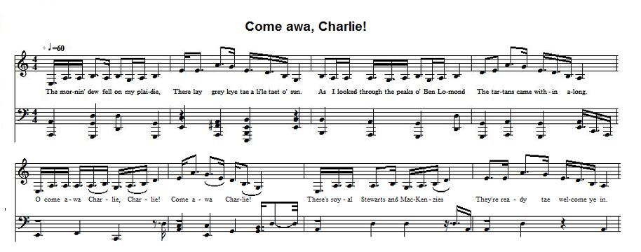

Come awa, Charlie
Tu peux sortir, Charlie
Author unknown

Tune - Mélodie
from the "Tobar an Dualchais" site: as sung by Lucy Stewart in 1960 in Fetterangus (Aberdeenshire)
Sequenced by Christian Souchon
|
To the tune:
This throughout pentatonic song was sung by Lucy Stewart (1901 - 1982) and recorded by the American folklorist Prof. Kenneth Goldstein (1927 - 1995). Mrs Stewart was apparently the only contributor who knew this beautiful song. Unfortunately, the School of Scottish Studies record encompasses only 2 stanzas and choruses of 4 lines. Permanent Link - http://www.tobarandualchais.co.uk/fullrecord/55598/1 To the lyrics: "A Jacobite song in which the singer welcomes the landing of Bonnie Prince Charlie in Scotland." This touching song in which the landing Prince is presented with mended trousers and offered rustic accommodation reminds us of a similar song: "Tho' my fireside" . |
A propos de la mélodie:
Cette mélodie entièrement pentatonique a été interprétée par Lucy Stewart (1901 - 1982) et enregistrée par le folkloriste américain Kenneth Goldstein (1927 - 1995). Mme Stewart était apparemment la seule personne à connaître ce beau chant. On regrette que l'enregistrement de la "School of Scottish Studies" ne comporte que 2 couplets et 2 refrains de 4 vers chacun. Lien permanent: http://www.tobarandualchais.co.uk/fullrecord/55598/1 A propos des paroles: "Chant jacobite où le chanteur souhaite la bienvenue en Ecosse au Bon Prince Charles." Cette pièce touchante où le prince se voit offrir des chausses rapiécées et une rustique hospitalité est de la même veine que cet autre chant: "Bien que mon foyer..." . |

|
O COME AWA, CHARLIE
1. The mornin' dew fell on my plaidie, There lay grey kye tae a little taet o' sun. As I looked through the peaks o' Ben Lomond The tartans came within along. CHORUS O come awa Charlie, Charlie! Come awa Charlie! There's royal Stewarts and McKenzies They're ready tae welcome ye in. 2. I mended the hole in John's trousers His are breeks I made them like new. An' court made 'em join some barley sheaves When grandfather booked us our coor. O come awa... |
TU PEUX SORTIR, CHARLIE
1. Mon plaid était humide de rosée. Les bœufs gris guettaient le soleil. J'aperçus du côté du Ben Lomond, Approchant, des tartans vermeils. REFRAIN Tu peux sortir, Charlie, Charlie. Charlie, tu peux sortir. O 'Y a des Stewart, des McKenzie Venus exprès pour t'accueillir. 2. J'ai réparé l'accroc aux chausses De Jean. Elles sont comme neuves. Le juge a fait ajouter des gerbes D'orge au toit loué par l'aïeul. Tu peux sortir... |